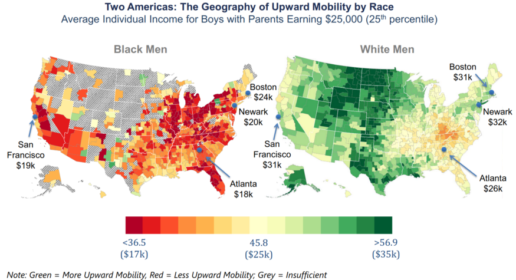

This blog is an attempt to figure out what are America’s most significant problems by trying to put a number on each. Historically, one of our biggest problems has been racism. I’ve already put a number on legal issues caused by racism. In this post, I try to put a number on the economic issues. As you will see, the economic issues are large. Black and Native American families have less income than White families. It is significant, to both the people involved and the country as a whole. And it is not getting better.
Racism is hard to measure. While discriminating on race is (now) widely seen as a bad thing, discriminating against people who grew up poor is widely acceptable. And many minorities grow up poor. So, when we talk about minorities having worse health or wealth or influence, it is difficult to tell if is because of their race or their parents’ income. To measure racial discrimination accurately, you would need a gigantic study that looked up everyone’s parent’s income. And we’re lucky that that’s exactly what renowned economist Raj Chetty and others did.
Their gigantic study has lots of results and it is difficult to select a single number to represent all the data for each racial group, but the best number is the “steady state”. For all groups, kids from the richest families, on average, end up poorer than their parents. If you pause to think about it, this makes sense: Bill Gates’s 3 kids will probably each earn less than their parents. Similarly, kids from the poorest families, on average, end up richer. So, somewhere in the middle, there are families whose kids are expected to end up at the same (relative) income as their parents. The income of these pairs of parents/kids are the “steady state”.
For the population as whole, the steady state is the very middle: the 50th percentile. Using this table, the 50th percentile for a family’s income is currently $68,400 per year.
The steady state acts like gravity because, whatever the parents’ income, the child’s income will be drawn closer to the steady state. So, if the parents earn more than $68,400, the kids will earn relatively less than the parents (and closer to the future equivalent of $68,400). If the parents earn less than $68,400, the kids will earn relatively more than the parents (and closer to the future equivalent of $68,400).
When we look at only Black families, the steady state for them is at the 35th percentile of everyone. That is currently a family income of $46,800 per year. So, if a Black family earns $50,000 or $60,000, they can expect their kids to earn relatively less than their parents (and closer to the future equivalent of $46,800).
For White families, the steady state is the 54th percentile or $75,000. So, if a White family earns $50,000 or $60,000 or even $70,000, they can expect their kids to earn relatively more than their parents (and closer to the future equivalent of $75,000).
So, as you can see, a racial disparity exists. It is significant — Black families at the steady state take home $21,600 less than expected. And, because the average Black family income is already close to that steady state, it is not improving.
These regretful numbers are nearly identical for Native Americans. Hispanics are close to the average American, with a steady state at the 48th percentile or $65,000. Asian Americans have a steady state at the 57th percentile or $80,400. (The higher value for Asian Americans seems to be a result of immigrant parents. When the data is restricted to American-born parents, the steady state is close to that of White families.)
The steady state is useful to show there is a problem and the problem is persistent. The researchers looked deeper to find the causes. Some of the effect is due to marriage rates. A two-income family usually earns more than a single-income family and the Black children’s families are 30% less likely to contain a married couple, for all levels of their childhood family income. (I don’t find this surprising because that the same study showed that Black men are 3 times more likely to be incarcerated and a much-less-rigorous study indicated that Black women on the dating website OkCupid have a harder time meeting someone than women of other races.)
But the marriage rate is not the only cause of lower income in the Black children’s families. When the researchers compared the incomes of Black men and women to White men and women: they found that while Black women earn as much as White women, Black men earn much less than White men. The difference between the incomes of Black men and White men are visible in the graphic below. For men whose parents earn $25,000 per year, Black men are likely to earn less than their parents, and White men more.
 Image source: https://opportunityinsights.org/wp-content/uploads/2018/04/race_slides.pdf
This lower income by Black men has multiple causes. Black men were more likely to grow up in bad neighborhoods, where kids of all races earned less as adults. But Black men almost always earned less as adults than White men who grew up in the same neighborhood. The study’s authors identified a few places in the country where Black men did as well as White men. These tended to be “low-poverty neighborhoods with low levels of racial bias among whites and high rates of father presence among blacks.” (Racial bias in an area was measured using the residents’ Google searches.) Fewer than 5% of Black men grew up in these good areas, while 63% of White men did.
I was surprised that a man’s adult income was less affected by whether or not his own father was present in his childhood home, than by how many fathers were present in the entire neighborhood. And that the race of the fathers in the neighborhood mattered. Since the presence of Black fathers is important, it is hard not to mention that this very study also showed that Black men are 3 times more likely to be incarcerated.
If we wanted to put a price tag on fixing the disparity, it would require increasing all Black and Native American families income to what the average American would receive, given their parents income. That would lift the average of 15.6 million families to the 45th percentile, or $60,100. The annual cost would be around $207 billion, or roughly $600 per American per year.
The important part is that race has a large economic effect in America. Black and Native American families earn dramatically less than White families, no matter what their parents’ income. And the current trend is that the incomes of those minorities are never going to be equal to Whites’. They will tend to the steady state, which is $21,600 less than it should be if race didn’t matter.